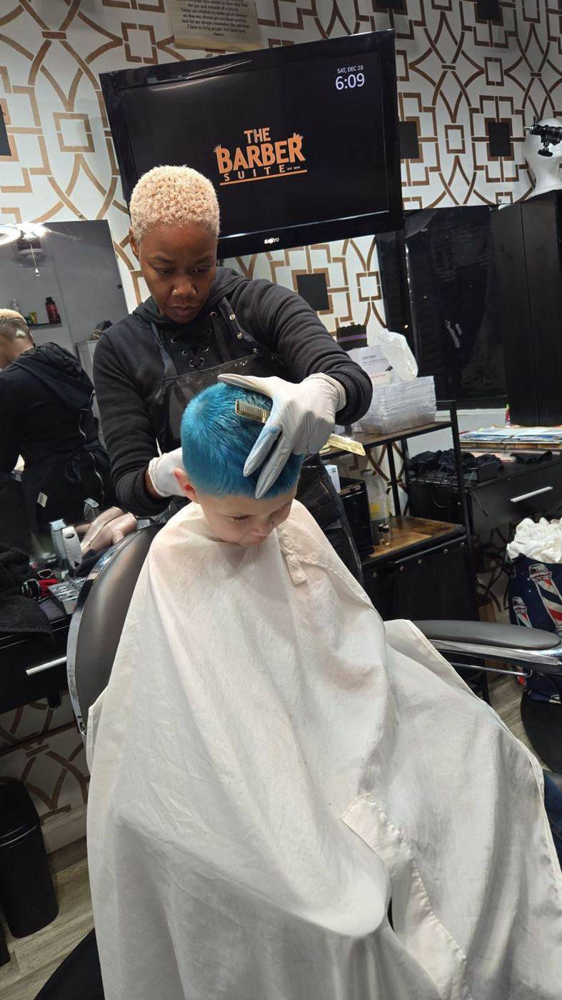
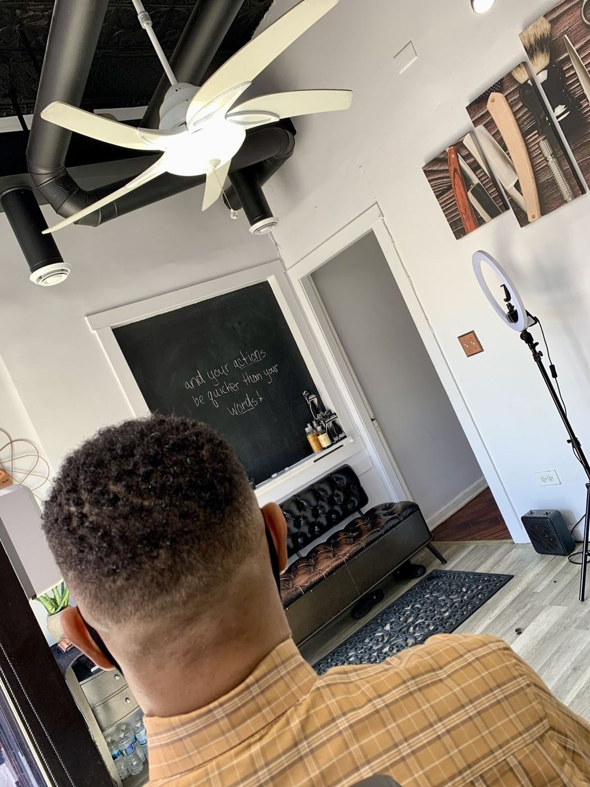
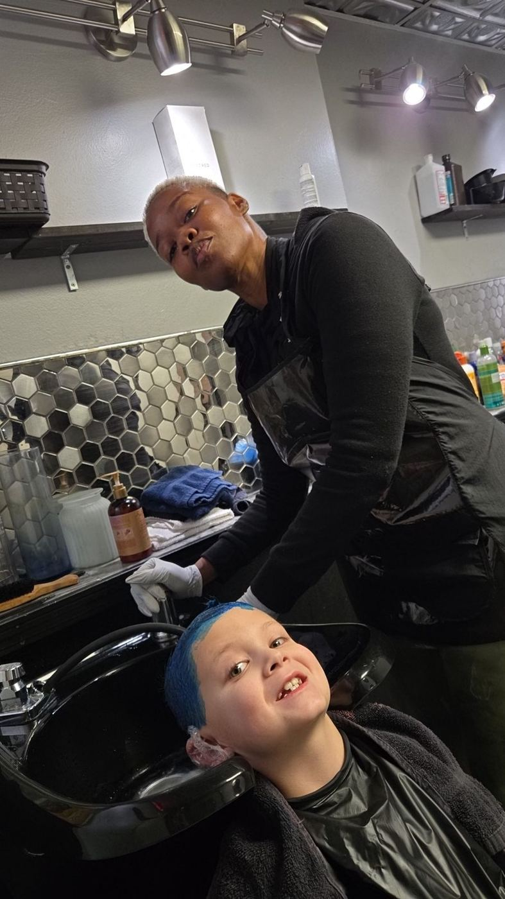
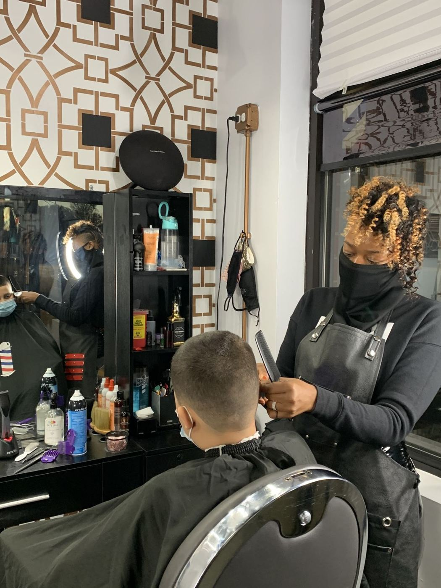
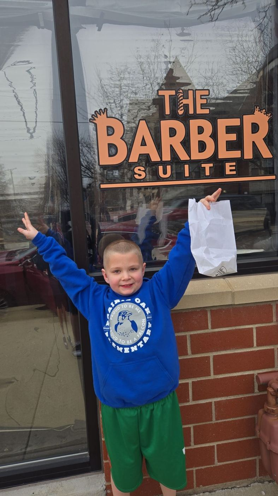
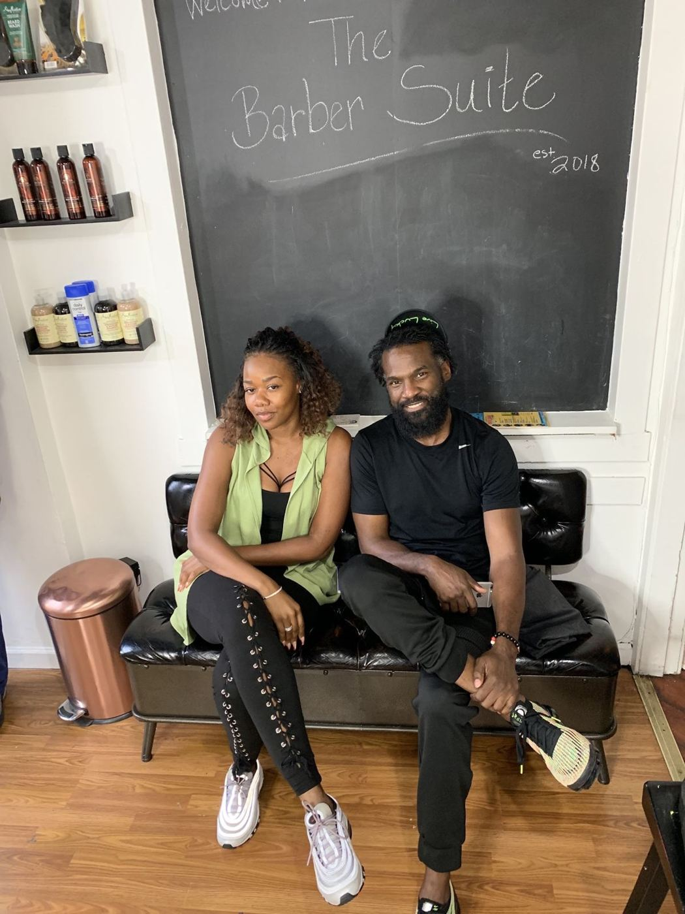

“Booking with Peaches is life-changing — and it starts the moment you lock in your appointment on Booksy. This isn’t just a haircut, it’s a transformation. From the second you step into The Barber Suite, the energy is intentional, the space…”




Pick your barber

“Today was my first time visiting The Barber Suite, and I’m happy that I went. Kelz did a very nice job - he took his time and ensured that my haircut was perfect. I’ll definitely be back!”

“We love this place! This is my kiddo’s barbershop and Orlando (“O”) is our man! From the beginning O has been like family and my child’s favorite barber. She loves to keep him on his toes with her ever-changing style requests but O always…”
The book
Sun—
Mon—
Tue10–6
Wed—
Thu10–7
Fri10–6
Sat10–6
South Side approved
“Always clean and professional. Peaches and O are probably the best barbers on the south side of Chicago in my opinion. Stop by and get chopped up the right way.”
“Service is wonderful. People are great. Kels is really talented barber and i see where he gets his talent from because his mothers barber skills are off the charts.”
“Very friendly and clean environment. Easy to feel comfortable in this shop! Highly recommended.”